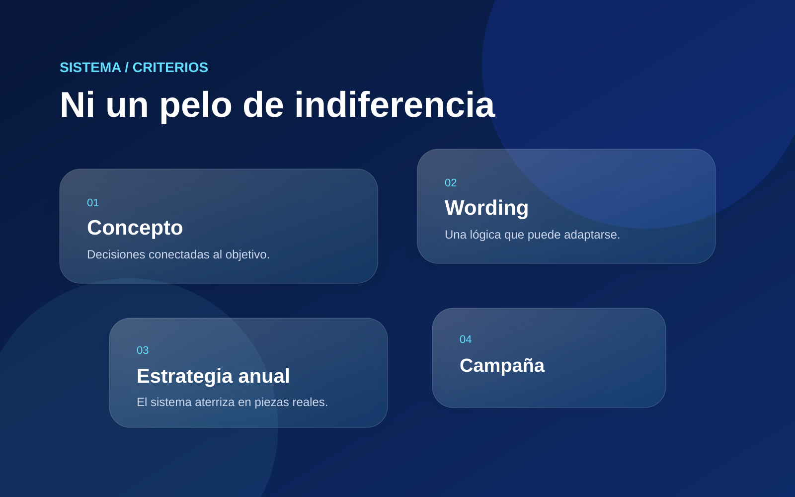

Concepto memorable
Un lema directo ayuda a abrir conversación y recordar la causa.
Hacer visible una causa con un mensaje capaz de movilizar.
“Ni un pelo de indiferencia” fue el lema del 11° Día Descabellado de Una Nueva Esperanza, una campaña para apoyar a niñas y niños con cáncer. Desarrollé el concepto, el wording, la estrategia anual y los artes.

Una campaña reconocible, cercana y con suficiente fuerza para mantenerse activa durante el año.
Concepto creativo, wording, estrategia anual, dirección visual y desarrollo de artes de campaña.
La estructura se adaptó al proyecto para convertir información y decisiones en una solución implementable.
El mensaje debía llamar la atención sin perder claridad ni sensibilidad frente a la causa.
Un lema directo ayuda a abrir conversación y recordar la causa.
La campaña se pensó para sostenerse más allá de una sola fecha.
Las piezas mantienen una voz común mientras se adaptan a distintos momentos.
Una selección del sistema, el proceso y sus aplicaciones.

